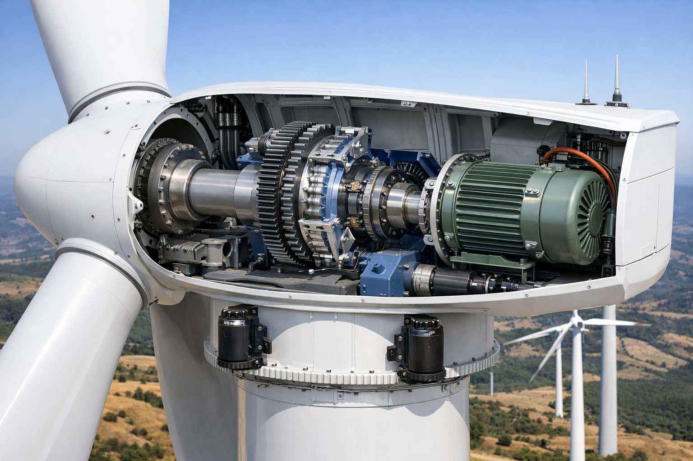
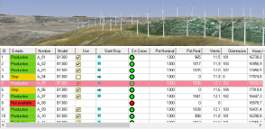
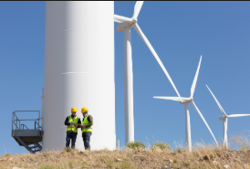

Welcome to this website
Here you will find didactic material for training in wind turbine and wind farm technologies.

Resources by profile
Industrial Wind Turbine Technologies
If your interest is the industrial state of the art of these technologies, you can access Introduction to Wind Turbine Concepts and Electric Grid & Wind Farms. In Videos & Demonstrations you have access to a selection of curated videos.

Real-Time Simulators — Digital Twins
If you are a student, in Real-Time Simulators you can access a set of Simulators built on Digital Twins specialised by wind turbine family — unique in the market. They let you experience their behaviour as what they truly are: electricity production plants designed for unattended operation. They come with interactive web applications (tutorials) explaining their components in detail. You will be able to observe how the turbines react under normal conditions, exceptional conditions (hurricane winds, grid faults, high temperatures, etc.) and also with component failures, as if you were inside the wind turbine.

Tutorials & Practical Exercises
If you are a Professor or Instructor, the tutorials will complement your own material with details that are hard to find elsewhere. A set of Practical Exercises is also included, designed so that students can reproduce situations similar to those that actually occur in wind turbine operation.

Drive Train Analysis & B2B Converters
If you are an Engineering student, you have two key applications for wind turbine design: Drive Train Analysis Software and, for the study of DFIG Back-to-Back Converters.

Maintenance Support — From Incident to Diagnosis
If you are a Wind energy professional, see our Maintenance Support solutions («from incident to diagnosis»).

Start with the Interactive App
All resources — simulators, tutorials, exercises and tools — are available in the ACMSL interactive training app. Free 2-day evaluation, no credit card required.
Open Interactive App